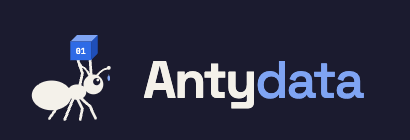

01
TRUSTED MODEL + INPUTNormal AI
—minutes
Run the fitted AI on the untouched held-out evidence.
Source trust100%

On this delivery dataset, a high-volume but unreliable feed pushed predictions farther from the real delivery time. The proposed safeguard helped too little and failed other tests.
This is real server-side inference. First run the trusted pipeline. Then run the full degraded scenario—retrained model plus matching degraded inputs—and test the safeguard.
Run the fitted AI on the untouched held-out evidence.
Use the model retrained on the simulated unreliable feed and this delivery’s matching degraded inputs.
Weight trust, back off suspicious inputs, and check review risk.
Each step makes a fresh request to the online backend and evaluates the corresponding fitted model.
What is live? Training happened beforehand for speed and repeatability. Every button evaluates the exported fitted trees on the selected held-out delivery in the online Worker. The real outcome is never a model input.
Upload a prepared CSV, preview the rows, then compare the trusted model, unreliable-feed model, and safeguard in one batch. Your file is read for this prediction request only.
region_code, aoi_type_code, accept_hour, day_of_week, distance_km, courier_recent_accepts, area_historical_eta, and courier_historical_eta.
package_id and duration_minutes are optional. Include the duration to calculate retrospective error.
duration_minutes as an input.
The key scenario is already selected: the noisy feed, with the safeguard off. Turn the safeguard on to see whether it recovers the loss.
Read the plain-language result first. The figures and timeline underneath are supporting evidence, not the headline.
The feed raises the average prediction miss by 2.1 minutes compared with the trusted-data reference.
We repeated the same comparison with trusted data, old data, the noisy feed, and both problems together.
1Weight Low-trust training rows count less.
2Back off Suspicious inputs move toward robust defaults.
3Review High-risk outputs go to a dispatcher.
This is a walkthrough, not an illusion of autonomy. The dispatcher can accept, correct, or escalate—and every action is logged.
Loading evidence…
Ground-truth duration is hidden during review and used only for offline evaluation.
This console reads the measured experiment evidence—not example screenshots. Review the registered failure, compare a real held-out delivery before and after degradation, and see why the current safeguard remains a no-go.
Download modification log CSV ↓The registered low-quality feed reaches 55% of training evidence.
Loading the registered changed fields…
Package IDs and actual delivery outcomes remain fixed across trusted, degraded, and safeguarded conditions.
Loading measured experiment errors…
Accept keeps the changed value. Reject restores the trusted value. The safeguard column remains visible as the automated recommendation.
Loading measured changes…
Only fields changed by the registered low-quality intervention are shown. The actual delivery duration remains hidden from the model.
| Input used by the AI | Trusted | Proposed | Safeguard | Approved | Human action |
|---|---|---|---|---|---|
| Loading measured values… | |||||
0 accepted · 0 rejected
This approval records a human data decision. It does not retrain the published model or change the competition results.
Download measured results →Values in each record are derived server-side from the measured held-out evidence.
No review decisions recorded yet.
This walkthrough is part of the platform. Choose the overview or any experiment scenario, play its data-generated briefing, inspect the rollout gates, and open the dispatcher-facing report.